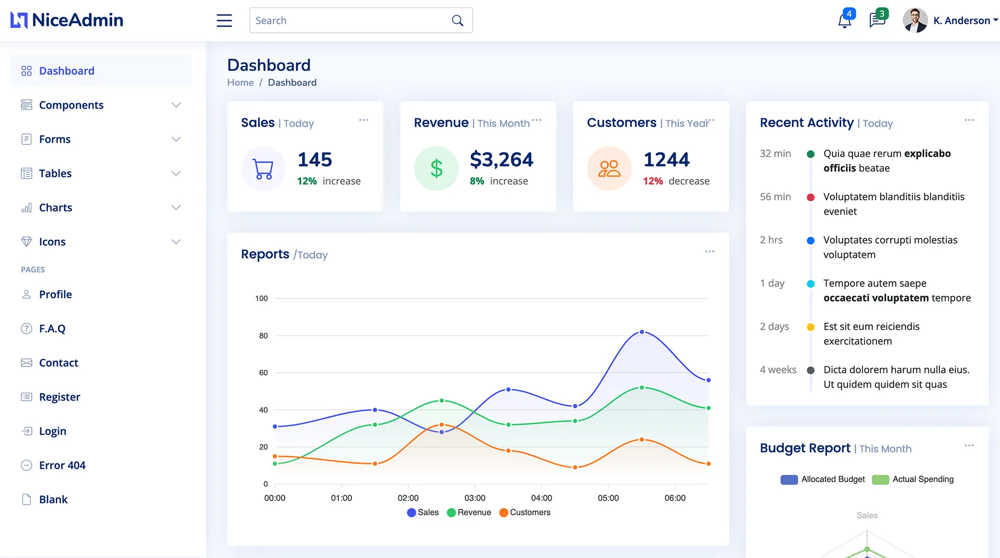
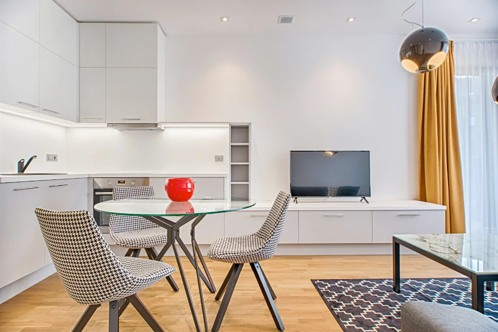

1. Urgensi Memilih Tempat Magang dan PKL yang Berkualitas Bagi Siswa SMK
Tempat magang SMK yang ideal adalah perusahaan atau agensi yang memiliki kurikulum terstruktur berbasis proyek riil, menyediakan bimbingan mentor praktisi berpengalaman, menjamin keamanan dan kenyamanan fasilitas kerja, serta memberikan sertifikat kompetensi resmi yang diakui oleh dunia usaha dan dunia industri (DUDI).
Bagi siswa Sekolah Menengah Kejuruan (SMK), masa Praktik Kerja Lapangan (PKL) atau Prakerin merupakan jembatan emas pertama menuju dunia kerja profesional. Sayangnya, banyak siswa tergesa-gesa memilih tempat magang tanpa riset mendalam, sehingga akhirnya hanya ditugaskan mengerjakan hal-hal administratif ringan yang tidak mengasah kompetensi kejuruan mereka, seperti fotokopi berkas atau input data manual tanpa nilai tambah.
Di Kota Malang sebagai pusat pendidikan vokasi terkemuka di Jawa Timur, terdapat ratusan perusahaan rintisan, agensi digital marketing, dan kantor bisnis. Namun, tidak semua tempat siap memberikan bimbingan teknis intensif kepada siswa SMK. Diperlukan pemahaman parameter kualitas agar waktu 3 hingga 6 bulan masa PKL Anda benar-benar menghasilkan keahlian nyata dan portofolio profesional.

Program Magang SMK (PKL & Prakerin) Terstruktur di Gemilang Training Malang
Simak pembagian 4 jurusan vokasi: RPL, TKJ, DKV/Multimedia, dan Bisnis Daring Pemasaran (BDP) dengan proyek riil.
2. Sepuluh Tips Krusial Menentukan Lokasi Magang SMK yang Nyaman & Aman
Berikut adalah 10 parameter wajib yang harus diverifikasi oleh siswa SMK, guru pembimbing sekolah, dan orang tua sebelum mengajukan surat permohonan magang:
1. Keselarasan Jurusan dengan Proyek Industri Nyata
Pastikan perusahaan menyediakan proyek yang sejalan dengan jurusan Anda di sekolah. Siswa RPL/PPLG harus memegang kode web/aplikasi, siswa DKV mengerjakan aset visual kreatif, dan siswa Pemasaran (BDP) mengelola riset kata kunci dan media sosial bisnis.
2. Keberadaan Mentor Pembimbing Berdedikasi
Perusahaan yang kredibel menunjuk mentor senior untuk mendampingi siswa setiap hari. Mentor bertugas melakukan evaluasi berkala (*code review* atau *design critique*), menjawab kendala teknis, dan mengarahkan etika kerja tim.
3. Fasilitas Tempat Kerja & Akses Internet Berkecepatan Tinggi
Pekerjaan digital membutuhkan koneksi internet stabil dan perangkat yang memadai. Pastikan lingkungan kantor memiliki ruang berpendingin udara yang sehat, meja kerja ergonomis, dan fasilitas sanitasi yang bersih.
4. Peluang Membangun Portofolio Live Production
Tanyakan apakah hasil karya Anda akan ditayangkan di platform klien atau publik. Portofolio website yang dapat diakses publik atau konten media sosial yang menghasilkan impresi nyata memiliki nilai jual tinggi saat melamar kerja kelak.
5. Legalitas Usaha & Kemitraan Resmi dengan SMK
Pilihlah instansi yang memiliki izin usaha resmi dan rekam jejak kemitraan dengan SMK di Malang. Hal ini menjamin bahwa nilai laporan magang Anda diakui secara sah oleh pihak sekolah dan dinas pendidikan.
6. Akses Transportasi & Lokasi Kantor yang Strategis
Lokasi kantor operasional di pusat Kota Malang yang dekat dengan rute angkutan umum atau jalan utama akan memudahkan mobilitas harian siswa tanpa membebani biaya transportasi harian.
7. Transparansi Jam Kerja dan Beban Penugasan
Jam kerja magang wajib disesuaikan dengan kapasitas peserta didik (maksimal 7–8 jam kerja reguler per hari dari Senin hingga Jumat). Hindari tempat magang yang menuntut lembur malam yang merugikan kesehatan siswa.
8. Kultur Kolaboratif Tanpa Diskriminasi atau Senioritas
Lingkungan kerja yang sehat menerapkan keterbukaan ide dan saling menghargai. Di Gemilang Training, siswa didorong untuk berani menyampaikan opini kreatif dalam sesi *brainstorming* kampanye pemasaran bersama mentor senior.
9. Pembekalan Soft Skill & Komunikasi Profesional
Dunia industri tidak hanya menuntut kemampuan teknis (*hard skill*), tetapi juga kedisiplinan waktu, etika berkirim surel formal, kerja sama tim, dan kemampuan mempresentasikan hasil kerja di depan rekan kerja.
10. Sertifikat Kelulusan & Peluang Rekrutmen Karier
Carilah tempat magang yang memberikan sertifikat kelulusan industri lengkap dengan deskripsi capaian kompetensi. Peserta magang berprestasi di Gemilang Training bahkan berpeluang diprioritaskan menjadi tim profesional agensi setelah lulus SMK.

3. Metode Memverifikasi Kualitas Tempat Magang Sebelum Mengirim Berkas
Jangan hanya terpukau oleh brosur digital di media sosial. Sebelum Anda menyerahkan surat permohonan PKL resmi dari pihak sekolah, lakukan verifikasi praktis berikut:
- Tinjau Portofolio Nyata: Kunjungi situs web resmi calon tempat magang dan periksa studi kasus proyek yang pernah dikerjakan oleh tim atau alumni magang sebelumnya.
- Tanyakan kepada Alumni Sekolah: Diskusikan pengalaman kakak kelas yang pernah magang di tempat tersebut mengenai perlakuan mentor dan bobot penugasan.
- Kunjungi Lokasi Kantor Fisik: Datang langsung untuk melihat suasana kantor, kebersihan lingkungan, serta kemudahan rute transportasi dari tempat tinggal Anda.
- Pastikan Kesepakatan Laporan: Konfirmasikan apakah pihak perusahaan bersedia mengisi lembar logbook kegiatan mingguan dan menandatangani laporan akhir PKL tepat waktu.

Panduan 6 Langkah Alur Pendaftaran Magang SMK & Mahasiswa di Malang
Panduan lengkap mulai dari pengiriman surat sekolah, seleksi portofolio, wawancara daring, hingga onboarding resmi.
4. Kesimpulan: Magang Berkualitas Menentukan Arah Karier Masa Depan
Masa Praktik Kerja Lapangan (PKL) bukan sekadar kewajiban kurikulum untuk mendapatkan nilai rapot, melainkan investasi waktu paling strategis bagi siswa kejuruan untuk membuktikan kualitas diri di mata pelaku industri riil.
Dengan menerapkan 10 tips krusial di atas, Anda sebagai siswa dapat menjalani masa magang dengan nyaman, terlindungi oleh SOP industri yang jelas, dan pulang membawa kompetensi digital bernilai tinggi yang siap mengantarkan Anda bersaing di dunia kerja modern.
Ingin Magang di Tempat yang Terbukti Membina Keterampilan Digital?
Gemilang Training membuka kuota magang PKL SMK di Kota Malang untuk jurusan RPL, TKJ, DKV, Multimedia, dan Bisnis Daring Pemasaran dengan bimbingan mentor praktisi berpengalaman.
Daftar & Konsultasi Magang via WhatsAppPertanyaan Sering Diajukan (FAQ)

Ahmad Rifqi, S.Kom
Praktisi digital marketing agency dan pembina vokasi dengan pengalaman lebih dari 8 tahun membimbing ratusan siswa SMK dan mahasiswa di Jawa Timur dalam penguasaan SEO korporat, web development terstruktur, dan strategi pemasaran data-driven.